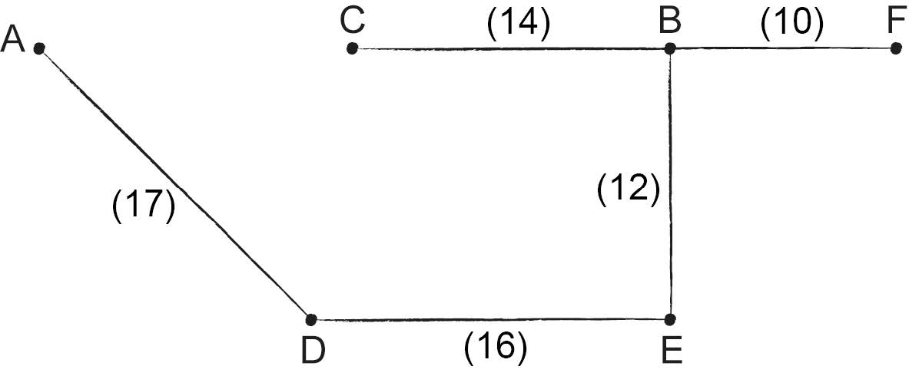
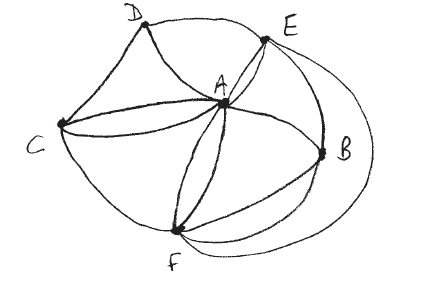
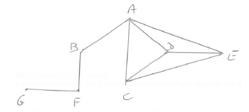
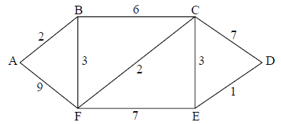
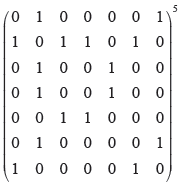

SL Paper 2
The sequence \(\{ {u_n}\} \) satisfies the second-degree recurrence relation
\[{u_{n + 2}} = {u_{n + 1}} + 6{u_n},{\text{ }}n \in {\mathbb{Z}^ + }.\]
Another sequence \(\{ {v_n}\} \) is such that
\[{v_n} = {u_{2n}},{\text{ }}n \in {\mathbb{Z}^ + }.\]
Write down the auxiliary equation.
Given that \({u_1} = 12,{\text{ }}{u_2} = 6\), show that
\[{u_n} = 2 \times {3^n} - 3 \times {( - 2)^n}.\]
Determine the value of \(\mathop {\lim }\limits_{n \to \infty } \frac{{{u_n} + {u_{n - 1}}}}{{{u_n} - {u_{n - 1}}}}\).
Determine the second-degree recurrence relation satisfied by \(\{ {v_n}\} \).
Markscheme
the auxiliary equation is \({m^2} - m - 6 = 0\) or equivalent A1
[??? marks]
attempt to solve quadratic (M1)
the roots are \(3,{\text{ }} - 2\) A1
the general solution is
\({u_n} = A \times {3^n} + B \times {( - 2)^n}\) A1
initial conditions give
\(3A - 2B = 12\)
\(9A + 4B = 6\) M1
the solution is \(A = 2,{\text{ }}B = - 3\) A1
\({u_n} = 2 \times {3^n} - 3 \times {( - 2)^n}\) AG
[??? marks]
\({u_n} + {u_{n - 1}} = 2 \times {3^n} - 3 \times {( - 2)^n} + 2 \times {3^{n - 1}} - 3 \times {( - 2)^{n - 1}}\) M1
\( = 8 \times {3^{n - 1}} + {\text{multiple of }}{2^{n - 1}}\) A1
\({u_n} - {u_{n - 1}} = 2 \times {3^n} - 3 \times {( - 2)^n} - 2 \times {3^{n - 1}} + 3 \times {( - 2)^{n - 1}}\)
\( = 4 \times {3^{n - 1}} + {\text{multiple of }}{2^{n - 1}}\) A1
any evidence of noting that the \({3^{n - 1}}\) terms dominate R1
\(\mathop {\lim }\limits_{n \to \infty } \frac{{{u_n} + {u_{n - 1}}}}{{{u_n} - {u_{n - 1}}}} = 2\) A1
[??? marks]
\({v_n} = 2 \times {3^{2n}} - 3 \times {( - 2)^{2n}}\) M1
\( = 2 \times {9^n} - 3 \times {4^n}\) A1
the auxiliary equation is
\({m^2} - 13m + 36 = 0\) A1
the recurrence relation is
\({v_{n + 2}} = 13{v_{n + 1}} - 36{v_n}\) A1
[4 marks]
Examiners report
In 1985 , the deer population in a national park was \(330\). A year later it had increased to \(420\). To model these data the year 1985 was designated as year zero. The increase in deer population from year \(n - 1\) to year \(n\) is three times the increase from year \(n - 2\) to year \(n - 1\). The deer population in year \(n\) is denoted by \({x_n}\).
Show that for \(n \geqslant 2,{\text{ }}{x_n} = 4{x_{n - 1}} - 3{x_{n - 2}}\).
Solve the recurrence relation.
Show using proof by strong induction that the solution is correct.
Markscheme
\({x_n} - {x_{n - 1}} = 3({x_{n - 1}} - {x_{n - 2}})\) M1A2
\({x_n} = 4{x_{n - 1}} - 3{x_{n - 2}}\) AG
we need to solve the quadratic equation \({t^2} - 4t + 3 = 0\) (M1)
\(t = 3,{\text{ }}1\) A1
\({x_n} = a \times {1^n} + b \times {3^n}\)
\({x_n} = a + b \times {3^n}\) A1
\(330 = a + b\) and \(420 = a + 3b\) M1
\(a = 285\) and \(b = 45\) A1
\({x_n} = 285 + 45 \times {3^n}\) A1
\({x_n} = 4{x_{n - 1}} - 3{x_{n - 2}}\)
\({x_n} = 285 + 45 \times {3^n}\)
let \(n = 0 \Rightarrow {x_0} = 330\) A1
let \(n = 1 \Rightarrow {x_1} = 420\) A1
hence true for \(n = 0,{\text{ }}n = 1\)
assume true for \(n = k,{\text{ }}{x_k} = 285 + 45 \times {3^k}\) M1
and assume true for \(n = k - 1,{\text{ }}{x_{k - 1}} = 285 + 45 \times {3^{k - 1}}\) M1
consider \(n = k + 1\)
\({x_{k + 1}} = 4{x_k} - 3{x_{k - 1}}\) M1
\({x_{k + 1}} = 4(285 + 45 \times {3^k}) - 3(285 + 45 \times {3^{k - 1}})\) A1
\({x_{k + 1}} = 4(285) - 3(285) + 4(45 \times {3^k}) - (45 \times {3^k})\) (A1)
\({x_{k + 1}} = 285 + 3(45 \times {3^k})\)
\({x_{k + 1}} = 285 + 45 \times {3^{k + 1}}\) A1
hence if solution is true for \(k\) and \(k - 1\) it is true for. However solution is true for \(k = 0\), \(k = 1\). Hence true for all \(k\). Hence proved by the principle of strong induction R1
Note: Do not award final reasoning mark unless candidate has been awarded at least 4 other marks in this part.
Examiners report
Students often gained full marks on parts a) and b), but a minority of candidates made no start to the question at all.
Students often gained full marks on parts a) and b), but a minority of candidates made no start to the question at all.
In part c) it was pleasing to see a number of fully correct solutions to the strong induction, but many candidates lost marks for not being fully rigorous in the proof.
Use Kruskal’s algorithm to find a minimum spanning tree for the weighted graph shown below. State the weight of the tree.

For the travelling salesman problem defined by this graph, find
(i) an upper bound;
(ii) a lower bound.
Given that the integers \(m\) and \(n\) are such that \(3|({m^2} + {n^2})\) , prove that \(3|m\) and \(3|n\) .
Hence show that \(\sqrt 2 \) is irrational.
Markscheme

Start at an edge with weight \(2\), say BH, add other edges of weight \(2\) such that a cycle is not formed. Continue to add edges of increasing weight until all vertices have been included. M1
thus the minimum spanning tree is
\({\rm{BH + HC + GK + KH + KE + EF + GA + CD}}\) A3
total weight \( = 2 + 2 + 3 + 4 + 4 + 4 + 5 + 5 = 29\) A1
Note: GB may replace KH and other orders are possible.
[5 marks]
(i) upper bound \( = 2 \times \) weight of minimum spanning tree M1
\( = 58\) A1
(ii) deleting vertex F M1

the minimum spanning tree is
\({\rm{BH + HC + GK + KE + KH + GA + CD}}\) A2
total weight \( = 2 + 2 + 3 + 4 + 4 + 5 + 5 = 25\) A1
adding the two edges of least weight from F M1
lower bound \( = 25 + 4 + 6 = 35\) A1
Note: Alternative solutions may be given by deleting a different vertex.
[8 marks]
EITHER
\(3|m \Rightarrow m \equiv 0(\bmod 3)\) (R1)
if this is false then \(m \equiv 1\) or \(2(\bmod 3)\) and \({m^2} \equiv 1\) or \(4(\bmod 3)\) R1A1
since \(4 \equiv 1(\bmod 3)\) then \({m^2} \equiv 1(\bmod 3)\) A1
similarly \({n^2} \equiv 1(\bmod 3)\) A1
hence \({m^2} + {n^2} \equiv 2(\bmod 3)\)
but \({m^2} + {n^2} \equiv 0(\bmod 3)\) (R1)
this is a contradiction so \(3|m\) and \(3|n\) R1AG
OR
\(m \equiv 0\) , 1 or \(2(\bmod 3)\) and \(n \equiv 0\) , 1 or \(2(\bmod 3)\) M1R1
\( \Rightarrow {m^2} \equiv 0\) or \(1(\bmod 3)\) and \({n^2} \equiv 0\) or \(1(\bmod 3)\) A1A1
so \({m^2} + {n^2} \equiv 0,1,2(\bmod 3)\) A1
but \(3|{m^2} + {n^2}\) so \({m^2} + {n^2} \equiv 0(\bmod 3)\) R1
\(m \equiv 0(\bmod 3)\) and \(n \equiv 0(\bmod 3)\) R1
\( \Rightarrow 3|m\) and \(3|n\) AG
[7 marks]
suppose \(\sqrt 2 = \frac{a}{b}\) , where \(a,b \in \mathbb{Z}\) and \(a\) and \(b\) are coprime M1
then
\(2{b^2} = {a^2}\) A1
\({a^2} + {b^2} = 3{b^2}\) A1
\(3{b^2} \equiv 0(\bmod 3)\) A1
but by (a) \(a\) and \(b\) have a common factor so \(\sqrt 2 \ne \frac{a}{b}\) R1
\( \Rightarrow \sqrt 2 \) is irrational AG
[5 marks]
Examiners report
This was usually well done although some candidates have difficulty showing clearly the procedure through the algorithm.
This was usually well done although some candidates have difficulty showing clearly the procedure through the algorithm.
Part (a) was not well done although there were many suspect attempts at a proof.
If part (a) was missed it should still have been possible to use the "Hence" to complete part (b). Unfortunately this did not often happen.
(a) Consider the recurrence relation \(a{u_{n + 1}} + b{u_n} + c{u_{n - 1}} = 0\).
Show that \({u_n} = A{\lambda ^n} + B{\mu ^n}\) satisfies this relation where \(A\), \(B\) are arbitrary constants and \(\lambda \), \(\mu \) are the roots of the equation \(a{x^2} + bx + c = 0\).
(b) 
A particle \(P\) executes a random walk on the line above such that when it is at point \(n\left( {1 \leqslant n \leqslant 9,{\text{ }}n \in {\mathbb{Z}^ + }} \right)\) it has a probability \(0.4\) of moving to \(n + 1\) and a probability \(0.6\) of moving to \(n - 1\). The walk terminates as soon as \(P\) reaches either \(0\) or \(10\). Let \({p_n}\) denote the probability that the walk terminates at \(0\) starting from \(n\).
(i) Show that \(2{p_{n + 1}} - 5{p_n} + 3{p_{n - 1}} = 0\).
(ii) By solving this recurrence relation subject to the boundary conditions \({p_0} = 1\), \({p_{10}} = 0\) show that \({p_n} = \frac{{{{1.5}^{10}} - {{1.5}^n}}}{{{{1.5}^{10}} - 1}}\).
Markscheme
(a) consider
\(a{u_{n + 1}} + b{u_n} + c{u_{n - 1}} = aA{\lambda ^{n + 1}} + aB{\mu ^{n + 1}} + bA{\lambda ^n} + bB{\mu ^n} + cA{\lambda ^{n - 1}} + cB{\mu ^{n - 1}}\) M1A1
\( = A{\lambda ^{n - 1}}\left( {a{\lambda ^2} + b\lambda + c} \right) + B{\mu ^{n - 1}}\left( {a{\mu ^2} + b\mu + c} \right)\) A1
\(= 0 \)
[3 marks]
(b) (i) to terminate at \(0\) starting from \(n\), the particle must either move to \(n + 1\) and terminate at \(0\) starting from there or move to \(n - 1\) and terminate at \(0\) starting from there
therefore,
\({p_n} = 0.4{p_{n + 1}} + 0.6{p_{n - 1}}\) M1A2
leading to \(2{p_{n + 1}} - 5{p_n} + 3{p_{n - 1}} = 0\) AG
(ii) solving the auxiliary equation \(2{x^2} - 5x + 3 = 0\) M1
\(x = 1,{\text{ 1.5}}\) A1
the general solution is
\({p_n} = A + B{(1.5)^n}\) A1
substituting the boundary conditions,
\(A + B = 1\)
\(A + B{(1.5)^{10}} = 0\) M1A1
solving,
\(A = \frac{{{{1.5}^{10}}}}{{{{1.5}^{10}} - 1}};{\text{ }}B = - \frac{1}{{{{1.5}^{10}} - 1}}\) A1A1
giving
\({p_n} = \frac{{{{1.5}^{10}} - {{1.5}^n}}}{{{{1.5}^{10}} - 1}}\) AG
[10 marks]
Examiners report
The vertices and weights of the graph \(G\) are given in the following table.

(a) (i) Use Kruskal’s algorithm to find the minimum spanning tree for \(G\), indicating clearly the order in which the edges are included.
(ii) Draw the minimum spanning tree for \(G\).
(b) Consider the travelling salesman problem for \(G\).
(i) An upper bound for the problem can be found by doubling the weight of the minimum spanning tree. Use this method to find an upper bound.
(ii) Starting at \({\text{A}}\), use the nearest neighbour algorithm to find another upper bound.
(iii) By first removing \({\text{A}}\), use the deleted vertex algorithm to find a lower bound for the problem.
(c) The travelling salesman problem is now modified so that starting at \({\text{A}}\), the vertices \({\text{B}}\) and \({\text{C}}\) have to be visited first in that order, then \({\text{D}}\), \({\text{E}}\), \({\text{F}}\) in any order before returning to \({\text{A}}\).
(i) Solve this modified problem.
(ii) Comment whether or not your answer has any effect on the upper bound to the problem considered in (b).
Markscheme
(a) (i) using Kruskal’s algorithm, the minimum spanning tree is built up as follows
\({\text{BF}}\) A1
\({\text{BE, BC}}\) A1
\({\text{DE, AD}}\) A1
(ii)
 A1
[4 marks]
(b) (i) weight of minimum spanning tree \(= 69\) A1
Note: This mark may be earned earlier.
upper bound \(= 138\) A1
(ii) starting at \({\text{A}}\), the cycle is \({\text{A}} \to {\text{D}} \to {\text{E}} \to {\text{B}} \to {\text{F}} \to {\text{C}} \to {\text{A}}\) M1A1
an upper bound is the total weight of this cycle (M1)
\(17 + 16 + 12 + 10 + 20 + 19 = 94\) A1
(iii) the minimum spanning tree of the reduced graph is as above with AD removed (R1)
its total weight is \(10 + 12 + 14 + 16 = 52\) A1
adding the weights of the two deleted edges of the minimum spanning tree gives (M1)
lower bound \( = 52 + 17 + 18 = 87\) A1
[10 marks]
(c) (i) the possible cycles, and their weights, are
\({\text{A}} \to {\text{B}} \to {\text{C}} \to {\text{D}} \to {\text{E}} \to {\text{F}} \to {\text{A Weight 102 (or 70 exc A}} \to {\text{B}} \to {\text{C)}}\)
\({\text{A}} \to {\text{B}} \to {\text{C}} \to {\text{D}} \to {\text{F}} \to {\text{E}} \to {\text{A Weight 107 (or 75 exc A}} \to {\text{B}} \to {\text{C)}}\)
\({\text{A}} \to {\text{B}} \to {\text{C}} \to {\text{E}} \to {\text{D}} \to {\text{F}} \to {\text{A Weight 106 (or 74 exc A}} \to {\text{B}} \to {\text{C)}}\)
\({\text{A}} \to {\text{B}} \to {\text{C}} \to {\text{E}} \to {\text{F}} \to {\text{D}} \to {\text{A Weight 99 (or 67 exc A}} \to {\text{B}} \to {\text{C)}}\)
\({\text{A}} \to {\text{B}} \to {\text{C}} \to {\text{F}} \to {\text{D}} \to {\text{E}} \to {\text{A Weight 110 (or 78 exc A}} \to {\text{B}} \to {\text{C)}}\)
\({\text{A}} \to {\text{B}} \to {\text{C}} \to {\text{F}} \to {\text{E}} \to {\text{D}} \to {\text{A Weight 98 (or 66 exc A}} \to {\text{B}} \to {\text{C)}}\) A3
Note: Award A(3 – n) for \(n\) errors up to \(n = 2\), A0 thereafter.
the solution is therefore the cycle \({\text{A}} \to {\text{B}} \to {\text{C}} \to {\text{F}} \to {\text{E}} \to {\text{D}} \to {\text{A}}\)
(with weight \(98\)) A1
(ii) no, it has no effect A1
[5 marks]
Examiners report
The sequence \(\{ {u_n}:n \in {\mathbb{Z}^ + }\} \) satisfies the recurrence relation \(2{u_{n + 2}} - 3{u_{n + 1}} + {u_n} = 0\), where \({u_1} = 1,{\text{ }}{u_2} = 2\).
The sequence \(\{ {w_n}:n \in \mathbb{N}\} \) satisfies the recurrence relation \({w_{n + 2}} - 2{w_{n + 1}} + 4{w_n} = 0\), where \({w_0} = 0,{\text{ }}{w_1} = 2\).
(i) Find an expression for \({u_n}\) in terms of \(n\).
(ii) Show that the sequence converges, stating the limiting value.
The sequence \(\{ {v_n}:n \in {\mathbb{Z}^ + }\} \) satisfies the recurrence relation \(2{v_{n + 2}} - 3{v_{n + 1}} + {v_n} = 1\), where \({v_1} = 1,{\text{ }}{v_2} = 2\).
Without solving the recurrence relation prove that the sequence diverges.
(i) Find an expression for \({w_n}\) in terms of \(n\).
(ii) Show that \({w_{3n}} = 0\) for all \(n \in \mathbb{N}\).
Markscheme
(i) the auxiliary equation is \(2{r^2} - 3r + 1 = 0\) (M1)
with roots \(r = 1,{\text{ }}\frac{1}{2}\) A1
the general solution of the difference equation is (M1)
\({u_n} = A + B{\left( {\frac{1}{2}} \right)^n}\) A1
imposing the initial conditions M1
\(A + \frac{B}{2} = 1,{\text{ }}A + \frac{B}{4} = 2\) A1
obtain \({u_n} = 3 - 4{\left( {\frac{1}{2}} \right)^n}\) A1
(ii) as \(n \to \infty ,{\text{ }}{\left( {\frac{1}{2}} \right)^n} \to 0\) R1
\({u_n} \to 3\) A1
hence the sequence is convergent AG
[9 marks]
assume \({v_n} \to L\) M1
taking the limit of both sides of the recurrence relation M1
\(2L - 3L + L{\text{ }}( = 0) = 1\) A1
the contradiction shows that the sequence diverges AG
[3 marks]
(i) the auxiliary equation \({r^2} - 2r + 4 = 0\) A1
has roots \(1 \pm {\text{i}}\sqrt 3 \) A1
METHOD 1
these can be re-expressed as \(2\left( {\cos \left( {\frac{\pi }{3}} \right) \pm {\text{i}}\sin \left( {\frac{\pi }{3}} \right)} \right)\) M1
the general solution is
\({w_n} = {2^n}\left( {A\cos \left( {\frac{{n\pi }}{3}} \right) + B\sin \left( {\frac{{n\pi }}{3}} \right)} \right)\) A1
imposing the initial conditions
\(A = 0,{\text{ }}2B\frac{{\sqrt 3 }}{2} = 2\) A1
obtain \({w_n} = \frac{{{2^{n + 1}}}}{{\sqrt 3 }}\sin \left( {\frac{{n\pi }}{3}} \right)\) A1
METHOD 2
the general solution is
\({w_n} = A{\left( {1 + {\text{i}}\sqrt 3 } \right)^n} + B{\left( {1 - {\text{i}}\sqrt 3 } \right)^n}\) A1
imposing the initial conditions
\(A + B = 0,{\text{ }}A + B + {\text{i}}\sqrt 3 (A - B) = 2\) M1A1
obtain \({w_n} = \frac{1}{{{\text{i}}\sqrt 3 }}{\left( {1 + {\text{i}}\sqrt 3 } \right)^n} - \frac{1}{{{\text{i}}\sqrt 3 }}{\left( {1 - {\text{i}}\sqrt 3 } \right)^n}\) A1
(ii) METHOD 1
\({w_{3n}} = \frac{{{2^{3n + 1}}}}{{\sqrt 3 }}\sin (n\pi )\) R1
\( = 0\) AG
METHOD 2
\({w_{3n}} = \frac{1}{{{\text{i}}\sqrt 3 }}{\left( {1 + {\text{i}}\sqrt 3 } \right)^{3n}} - \frac{1}{{{\text{i}}\sqrt 3 }}{\left( {1 - {\text{i}}\sqrt 3 } \right)^{3n}}\)
\( = \frac{1}{{{\text{i}}\sqrt 3 }}{( - 8)^n} - \frac{1}{{{\text{i}}\sqrt 3 }}{( - 8)^n}\) R1
\( = 0\) AG
[7 marks]
Examiners report
A significant number of candidates had clearly not learned the mechanical procedure for solving linear three-term recurrences. Those who were well prepared, coped well with parts (a) and (c). Part (b) was very rarely successfully answered. Some candidates proved that \({v_{n + 1}} > {v_n}\) but erroneously concluded that the sequence diverged.
A significant number of candidates had clearly not learned the mechanical procedure for solving linear three-term recurrences. Those who were well prepared, coped well with parts (a) and (c). Part (b) was very rarely successfully answered. Some candidates proved that \({v_{n + 1}} > {v_n}\) but erroneously concluded that the sequence diverged.
A significant number of candidates had clearly not learned the mechanical procedure for solving linear three-term recurrences. Those who were well prepared, coped well with parts (a) and (c). Part (b) was very rarely successfully answered. Some candidates proved that \({v_{n + 1}} > {v_n}\) but erroneously concluded that the sequence diverged.
A canal system divides a city into six land masses connected by fifteen bridges, as shown in the diagram below.

Draw a planar graph to represent this map.
Write down the adjacency matrix of the graph.
List the degrees of each of the vertices.
State with reasons whether or not this graph has
(i) an Eulerian circuit;
(ii) an Eulerian trail.
Find the number of walks of length \(4\) from E to F.
Markscheme
 A2
[2 marks]
 A2
A2
Note: Award A1 for one error or omission, A0 for more than one error or omission. Two symmetrical errors count as one error.
[2 marks]
A B C D E F
(8, 4, 4, 3, 5, 6) A2
[2 marks]
(i) no, because there are odd vertices M1A1
(ii) yes, because there are exactly two odd vertices M1A1
[4 marks]

number of walks of length \(4\) is \(170\) (M1)A1
Note: The complete matrix need not be shown. Only one of the FE has to be shown.
[2 marks]
Examiners report
Parts (a) to (c) and (e) did not prove unusually difficult and were answered well.
Parts (a) to (c) and (e) did not prove unusually difficult and were answered well.
Parts (a) to (c) and (e) did not prove unusually difficult and were answered well.
Part (d) proved more problematic since there was confusion between the conditions to be satisfied for there to be a circuit and a trail. There is a difference between "there are two odd vertices" and "there are exactly two odd vertices". As noted elsewhere on paper 1, appreciation of the restrictions as well as the applications of results in mathematics should both be emphasized.
Parts (a) to (c) and (e) did not prove unusually difficult and were answered well. Not all of the matrix in part (e) needed to be shown.
A group of people: Andrew, Betty, Chloe, David, Edward, Frank and Grace, has certain mutual friendships:
Andrew is friendly with Betty, Chloe, David and Edward;
Frank is friendly with Betty and Grace;
David, Chloe and Edward are friendly with one another.
(i) Draw the planar graph \(H\) that represents these mutual friendships.
(ii) State how many faces this graph has.
Determine, giving reasons, whether \(H\) has
(i) a Hamiltonian path;
(ii) a Hamiltonian cycle;
(iii) an Eulerian circuit;
(iv) an Eulerian trail.
Verify Euler’s formula for \(H\) .
State, giving a reason, whether or not \(H\) is bipartite.
Write down the adjacency matrix for \(H\) .
David wishes to send a message to Grace, in a sealed envelope, through mutual friends.
In how many different ways can this be achieved if the envelope is passed seven times and Grace only receives it once?
Markscheme
(i)

A2
Note: Award A1 if one error made.
(ii) \(4\) A1
[3 marks]
(i) yes, for example GFBACDE A1R1
(ii) no, for example F and B would be visited twice A1R1
(iii) no, because the graph contains vertices of odd degree A1R1
(iv) no, because there are more than two vertices of odd degree A1R1
Note: The A and R marks can be considered as independent.
[8 marks]
\(v = 7\) , \(e = 9\) A1
\(f = 4\) from (a)(ii)
\(9 + 2 = 7 + 4\) R1AG
[2 marks]
no, because the graph contains at least one triangle A1R1
[2 marks]
\(\left( {\begin{array}{*{20}{c}}
{}&{\text{A}}&{\text{B}}&{\text{C}}&{\text{D}}&{\text{E}}&{\text{F}}&{\text{G}} \\
{\text{A}}&0&1&1&1&1&0&0 \\
{\text{B}}&1&0&0&0&0&1&0 \\
{\text{C}}&1&0&0&1&1&0&0 \\
{\text{D}}&1&0&1&0&1&0&0 \\
{\text{E}}&1&0&1&1&0&0&0 \\
{\text{F}}&0&1&0&0&0&0&1 \\
{\text{G}}&0&0&0&0&0&1&0
\end{array}} \right)\) A2
Note: A1 for one error, A0 for more than one error.
[2 marks]
METHOD 1
DG element of 7th power of matrix \( = 26\) M1A1A1
Note: M1 for attempt at some power; A1 for 7th power; A1 for \(26\).
DG element of the 5th power of the matrix \( = 2\) A1A1
obtain \(26 - 2 = 24\) M1A1
METHOD 2
the observation that letter has to reach Grace after Frank obtains it after \(6\) passings, (without Grace having received it earlier) (M1)(A1)
statement that the G row and column have been deleted A1A1
DF element of 6th power of new matrix is \(24\) M1A1A1
Note: M1 for attempt at some power of new or old matrix; A1 for 6th power of new matrix; A1 for 24.
[7 marks]
Examiners report
This question was generally well done.
This question was generally well done. Candidates who lost marks tended to do so as follows: (b)(i) for failing to give an example of a Hamiltonian path; (b)(ii) for giving an incomplete reason for the non-existence of a Hamiltonian cycle; (b)(iii)(iv) for giving the same reason for both parts.
This question was generally well done.
This question was generally well done. Candidates who lost marks tended to do so as follows: (d) for giving the definition of a bipartite graph as the reason for the fact that \(H\) is not bipartite.
This question was generally well done.
This question was generally well done.
The graph \(G\) has the following cost adjacency matrix.
Draw \(G\) in planar form.
Given that \(ax \equiv b(\bmod p)\) where \(a,b,p,x \in {\mathbb{Z}^ + }\) , \(p\) is prime and \(a\) is not a multiple of \(p\), use Fermat’s little theorem to show that
\(x \equiv {a^{p - 2}}b(\bmod p)\) .
Hence solve the simultaneous linear congruences\[3x \equiv 4(\bmod 5)\]\[5x \equiv 6(\bmod 7)\]giving your answer in the form \(x \equiv c(\bmod d)\) .
Markscheme

A2
[2 marks]
Note: The weights are not required for this A2.
Multiply through by \({a^{p - 2}}\) .
\({a^{p - 1}}x \equiv {a^{p - 2}}b(\bmod p)\) M1A1
Since, by Fermat’s little theorem, \({a^{p - 1}} \equiv 1(\bmod p)\) , R1
\(x \equiv {a^{p - 2}}b(\bmod p)\) AG
[3 marks]
Using the result from (a),
\(x \equiv {3^3} \times 4(\bmod 5) \equiv 3(\bmod 5)\) M1A1
\( = 3\), \(8\), \(13\), \(18\), \(23\),… (A1)
and \(x \equiv {5^5} \times 6(\bmod 7) \equiv 4(\bmod 7)\) M1A1
\( = 4\), \(11\), \(18\), \(25\),… (A1)
The general solution is
\(x = 18 + 35n\) M1
i.e. \(x \equiv 18(\bmod 35)\) A1
[8 marks]
Examiners report

The diagram above shows the graph \(G\).
(i) Explain briefly why \(G\) has no Eulerian circuit.
(ii) Determine whether or not \(G\) is bipartite.
(iii) Write down the adjacency matrix of G. Hence find the number of walks of length \(4\) beginning at A and ending at C.
The cost adjacency matrix of a graph with vertices P, Q, R, S, T, U is given by

Use Dijkstra’s Algorithm to find the length of the shortest path between the vertices P and S. Show all the steps used by the algorithm and list the order of the vertices in the path.
Markscheme
(i) Because the graph has vertices of odd degree. R2
(ii) We are looking for \(2\) disjoint sets. (M1)
Put A in Set 1. Then B and D have to go in Set 2. This means that E and C have to go in Set 1. Therefore the disjoint sets are \(\left\{ {{\rm{B,D}}} \right\}\) and \(\left\{ {{\rm{A,C,E}}} \right\}\) . All the edges join a vertex from one set to a vertex in the other set. R2
The graph is bipartite. A1
(iii)
\({\boldsymbol{M}} = \left( {\begin{array}{*{20}{c}}
0&2&0&1&0 \\
2&0&1&0&2 \\
0&1&0&1&0 \\
1&0&1&0&1 \\
0&2&0&1&0
\end{array}} \right)\)
We require the (\(1\), \(3\)) or (\(3\), \(1\)) element of \({\boldsymbol{M}^4}\) . M1M1
Using a GDC, the number of walks of length \(4\) is \(36\). A2
[12 marks]

The length of the shortest path is \(18\). A2
EITHER
P U Q T R S A2
OR
P U Q T S A2
[12 marks]
Examiners report
Given the linear congruence \(ax \equiv b({\rm{mod}}p)\) , where \(a\) , \(b \in \mathbb{Z} \) , \(p\) is a prime and \({\rm{gcd}}(a,p) = 1\) , show that \(x \equiv {a^{p - 2}}b({\rm{mod}}p)\) .
(i) Solve \(17x \equiv 14(\bmod 21)\) .
(ii) Use the solution found in part (i) to find the general solution to the Diophantine equation \(17x + 21y = 14\) .
Markscheme
\(ax \equiv b({\rm{mod}}p)\)
\( \Rightarrow {a^{p - 2}} \times ax \equiv {a^{p - 2}} \times b({\rm{mod}}p)\) M1A1
\( \Rightarrow {a^{p - 1}}x \equiv {a^{p - 2}} \times b({\rm{mod}}p)\) A1
but \({a^{p - 1}} \equiv 1({\rm{mod}}p)\) by Fermat’s little theorem R1
\( \Rightarrow x \equiv {a^{p - 2}} \times b({\rm{mod}}p)\) AG
Note: Award M1 for some correct method and A1 for correct statement.
[4 marks]
(i) \(17x \equiv 14(\bmod 21)\)
\( \Rightarrow x \equiv {17^{19}} \times 14(\bmod 21)\) M1A1
\({17^6} \equiv 1(\bmod21)\) A1
\( \Rightarrow x \equiv {(1)^3} \times 17 \times 14(\bmod 21)\) A1
\( \Rightarrow x \equiv 7(\bmod21)\) A1
(ii) \(x \equiv 7(mod21)\)
\( \Rightarrow x = 7 + 21t\) , \(t \in \mathbb{Z}\) M1A1
\( \Rightarrow 17(7 + 21t) + 21y = 14\) A1
\( \Rightarrow 119 + 357t + 21y = 14\)
\( \Rightarrow 21y = - 105 - 357t\) A1
\( \Rightarrow y = - 5 - 17t\) A1
[10 marks]
Examiners report
Some creative ways of doing this part involved more work than four marks merited although there were many solutions that were less simple than that in the markscheme.
(b)(i) Various ways were used and accepted.
(ii) Alternative valid solutions were found and in general this part was found to be within the reach of most candidates.
The following diagram shows a weighted graph \(G\) .

(i) Explain briefly what features of the graph enable you to state that \(G\) has an Eulerian trail but does not have an Eulerian circuit.
(ii) Write down an Eulerian trail in \(G\) .
(i) Use Kruskal’s algorithm to find and draw the minimum spanning tree for \(G\) . Your solution should indicate the order in which the edges are added.
(ii) State the weight of the minimum spanning tree.
Use Dijkstra’s algorithm to find the path of minimum total weight joining A to D, and state its weight. Your solution should indicate clearly the use of this algorithm.
Markscheme
(i) \(G\) has an Eulerian trail because it has \(2\) vertices of odd degree and the remaining vertices of even degree R1
\(G\) does not have an Eulerian circuit because not all vertices are of even degree R1
(ii) BAFBCFECDE A1
[3 marks]
(i) the edges are added in the order
FE A1
CE
AB A1
BF, CD
or CD, BF A1

A1
(ii) minimum weight is \(19\) A1
[5 marks]

the shortest path is AFCD A2
the weight is \(16\) A1
[10 marks]
Examiners report
This question was attempted by the majority of students with at least partial success by most. Most candidates were able to give a partial explanation of the condition for a graph to have an Eulerian trail and not an Eulerian circuit, but few were able to provide the required detail. Most candidates were able to write down an Eulerian trail in \(G\). Many candidates successfully applied Kruskal’s algorithm and Dijkstra’s algorithm, but a number of candidates did not appreciate the significance of the order of adding edges in Kruskal’s algorithm, and the explanations of Dijkstra’s algorithm were sometimes poor.
This question was attempted by the majority of students with at least partial success by most. Most candidates were able to give a partial explanation of the condition for a graph to have an Eulerian trail and not an Eulerian circuit, but few were able to provide the required detail. Most candidates were able to write down an Eulerian trail in G. Many candidates successfully applied Kruskal’s algorithm and Dijkstra’s algorithm, but a number of candidates did not appreciate the significance of the order of adding edges in Kruskal’s algorithm, and the explanations of Dijkstra’s algorithm were sometimes poor.
This question was attempted by the majority of students with at least partial success by most. Most candidates were able to give a partial explanation of the condition for a graph to have an Eulerian trail and not an Eulerian circuit, but few were able to provide the required detail. Most candidates were able to write down an Eulerian trail in \(G\). Many candidates successfully applied Kruskal’s algorithm and Dijkstra’s algorithm, but a number of candidates did not appreciate the significance of the order of adding edges in Kruskal’s algorithm, and the explanations of Dijkstra’s algorithm were sometimes poor.
The graph \(H\) has the following adjacency matrix.

(i) Show that \(H\) is bipartite.
(ii) Draw \(H\) as a planar graph.
(i) Explain what feature of \(H\) guarantees that it has an Eulerian circuit.
(ii) Write down an Eulerian circuit in \(H\) .
(i) Find the number of different walks of length five joining A to B.
(ii) Determine how many of these walks go through vertex F after passing along two edges.
Find the maximum number of extra edges that can be added to \(H\) while keeping it simple, planar and bipartite.
Find the smallest positive integer \(m\) such that \({3^m} \equiv 1(\bmod 22)\) .
Given that \({3^{49}} \equiv n(\bmod 22)\) where \(0 \le n \le 21\) , find the value of \(n\) .
Solve the equation \({3^x} \equiv 5(\bmod 22)\) .
Markscheme
(i) using any method, (M1)
find that \(\left\{ {{\rm{A,C,D,F}}} \right\}\) and \(\left\{ {{\rm{B,E,G}}} \right\}\) are disjoint sets of vertices A1
so that \(H\) is bipartite AG
(ii)
 A1
A1
[3 marks]
(i) all vertices are of even degree A1
(ii) DECBAGFBD A2
[3 marks]
(i)
 M1
number of walks \( = 36\) A1
(ii) recognition of the need to find walks of length \(2\) and walks of length \(3\) (M1)
number of walks of length \(2\) from A to F \( = 2\) A1
number of walks of length \(3\) from F to B \( = 6\) A1
required number of walks \( =12\) A1
[6 marks]
for a simple, bipartite graph to be planar,
\(e \le 2v - 4 = 10\) M1
at the moment, \(e = 8\) which means that we cannot add more than \(2\) edges A1
we see that we can add \(2\) edges, e.g. EA and EF A1
the maximum number of edges we can add is therefore \(2\) A1
[4 marks]
evaluating successive powers of \(3\) (M1)
\({3^1} \equiv 3(\bmod 22)\) , \({3^2} \equiv 9(\bmod 22)\) , \({3^3} \equiv 5(\bmod 22)\)
\({3^4} \equiv 15(\bmod 22)\) , \({3^5} \equiv 1(\bmod 22)\) so \(m = 5\) A1
[2 marks]
since \({3^5} \equiv 1(\bmod 22)\) , \({3^{45}} = {({3^5})^9} \equiv 1(\bmod 22)\) M1A1
consider \({3^{49}} = {3^{45}} \times {3^4} \equiv 1 \times 15(\bmod 22)\) so \(n = 15\) M1A1
[4 marks]
from (a), \(x = 3\) is a solution A1
since \({3^5} \equiv 1(\bmod 22)\) , the complete solution is \(x = 3 + 5N\) where \(N \in \bullet \) (M1)A1
[3 marks]
Examiners report
Solutions to (a) and (b) were generally satisfactory.
Solutions to (a) and (b) were generally satisfactory.
In (c)(ii), few candidates realised that they had to find the number of walks of length two joining A to F, the number of walks of length three joining F to B and then multiply these two numbers together.
In (d), most candidates noted that the number of edges, \(e\), was equal to \(8\) and that application of the inequality \(e \le 2v - 4\) gave \(e \le 10\) . They therefore concluded that two more edges could be drawn. It is, however, important to realise that the value of \(e\) given by this inequality is an upper bound that may not be attainable and that in this case, it was necessary to show that two extra edges could in fact be drawn.
This question was well answered in general with a variety of methods seen. Most candidates realised that the numbers involved precluded the use of Fermat’s little theorem.
This question was well answered in general with a variety of methods seen. Most candidates realised that the numbers involved precluded the use of Fermat’s little theorem.
In (c), most candidates gave \(x = 3\) as a solution following their earlier work in (a) but many candidates failed to realise that their answer to (b) showed that the general solution to (c) was actually \(3 + 5N\) where \(N\) is a non negative integer.

The diagram shows the graph \(G\) with the weights of the edges marked.
State what features of the graph enable you to state that \(G\) contains an Eulerian trail but no Eulerian circuit.
Write down an Eulerian trail.
Use Dijkstra’s algorithm to find the path of minimum total weight joining A to D, stating this total weight. Your solution should show clearly that this algorithm has been used.
Markscheme
there is an Eulerian trail because \(G\) contains exactly two vertices of odd order A1
there is no Eulerian circuit because \(G\) contains vertices of odd order A1
[2 marks]
the trail must start at B and end at E (or vice versa) (R1)
BAFBCFECDE R1
[2 marks]

Note: Award full marks if the correct path is given with correct total weight if an annotated graph is given that represents the Dijkstra algorithm.
[7 marks]
Examiners report
Consider the following weighted graph.

Determine whether or not the graph is Eulerian.
Determine whether or not the graph is Hamiltonian.
Use Kruskal’s algorithm to find a minimum weight spanning tree and state its weight.
Deduce an upper bound for the total weight of a closed walk of minimum weight which visits every vertex.
Explain how the result in part (b) can be used to find a different upper bound and state its value.
Markscheme
the graph is not Eulerian A1
because the graph contains vertices of odd degree R1
[2 marks]
the graph is Hamiltonian A1
because, for example, ABDFHGECA is a Hamiltonian cycle R1
[2 marks]
correctly start to use Kruskal’s algorithm DE(1) (M1)
BC(2), FG(2) or vice-versa A1
DC(3), AC(3) or vice-versa A1
GH(4) (rejecting AB) A1
DF(5) or EG(5) (rejecting BD) A1
total weight \( = 20\) A1
[6 marks]
the minimum weight spanning tree can be traversed twice (M1)
so upper bound is \(2 \times 20 = 40\) A1
[2 marks]
the Hamiltonian cycle found in (b) is a closed walk visiting every vertex and hence can be applied here R1
weight \( = 39\) A1
[2 marks]
Examiners report
(a) and (b) were generally well done. A few candidates said that the graph was not Eulerian because it contained more than two odd vertices. A few candidates failed to back up their assertion that the graph was Hamiltonian by stating an example of a relevant cycle.
(a) and (b) were generally well done. A few candidates said that the graph was not Eulerian because it contained more than two odd vertices. A few candidates failed to back up their assertion that the graph was Hamiltonian by stating an example of a relevant cycle.
In part (c) some candidates did not clearly indicate that they had used Kruskal's algorithm, but just drew a minimum spanning tree.
A connected planar graph has \(e\) edges, \(f\) faces and \(v\) vertices. Prove Euler’s relation, that is \(v + f = e + 2\) .
(i) A simple connected planar graph with \(v\) vertices, where \(v \ge 3\) , has no circuit of length \(3\). Deduce that \(e \ge 2f\) and therefore that \(e \le 2v - 4\).
(ii) Hence show that \({\kappa _{3,3}}\) is non-planar.
The graph \(P\) has the following adjacency table, defined for vertices A to H, where each element represents the number of edges between the respective vertices.

(i) Show that \(P\) is bipartite.
(ii) Show that the complement of \(P\) is connected but not planar.
Markscheme
consider the basic graph with just \(1\) vertex for which \(v = 1\) , \(f = 1\) and \(e = 0\)
for this case, \(v + f = e + 2 = 2\) so the result is true here M1A1
Note: Allow solutions which begin with a graph containing \(2\) vertices and an edge joining them for which \(v = 2\) , \(f = 1\) and \(e = 1\) .
a graph can be extended as follows – there are three cases to consider
I – an extra edge is added joining two distinct existing vertices R1
II – an extra edge is added joining an existing vertex to itself, forming a loop R1
in each case v remains the same and \(f\) and \(e\) each increase by \(1\)
both sides of the equation increase by \(1\) and the equation still holds R1
III – an extra vertex is added together with an edge joining this new vertex to an existing vertex (which is necessary to keep the graph connected) R1
in this case, \(f\) remains the same and \(v\) and \(e\) each increase by \(1\)
both sides of the equation increase by \(1\) and the equation still holds R1
any graph can be constructed from the basic graph by combining these operations, all of which result in Euler’s relation remaining valid R1
[8 marks]
(i) since the graph is simple there are no loops and no multiple edges and thus no circuits of length \(1\) or \(2\) R1
as we are told that there are no circuits of length 3, any face must be surrounded by at least \(4\) edges R1
since every edge is adjacent to \(2\) faces, R1
\(2e = \sum {({\text{degrees of faces}}) \ge 4f} \) , A1
it follows that \(e \ge 2f\) AG
using Euler’s relation with \(f \le \frac{e}{2}\) , M1
\(f = e - v + 2 \le \frac{e}{2}\) A1
giving \(e \le 2v - 4\) AG
(ii) \({\kappa _{3,3}}\) is simple and since it is bipartite it has no cycles of length \(3\) R1
for \({\kappa _{3,3}}\) , \(v = 6\) and \(e = 9\) A1
\(2v - 4 = 8\) so that the above inequality is not satisfied R1
it follows that \({\kappa _{3,3}}\) is not planar AG
[9 marks]
(i) attempt to find disjoint sets of vertices (M1)
disjoint sets are {A, D, G, H} and {B, C, E, F} A1
Note: Accept graph with vertices coloured, or otherwise annotated.
(ii) let \(P'\) denote the complement of P
in \(P'\) , A is connected to D, E, F, G and H : B and C are connected to E
therefore A is connected to all other vertices so \(P'\) is connected M1A1
a complete graph with \(8\) vertices has \(28\) edges A1
since \(P\) has \(9\) edges, \(P'\) has \(19\) edges A1
consider \(e \le 3v - 6\) (the condition for a planar graph) M1
for \({P'}\) , \(e = 19\) ; \(3v - 6 = 18\) so the condition is not satisfied A1
therefore \({P'}\) is not planar AG
[8 marks]
Examiners report
While on holiday Pauline visits the local museum. On the ground floor of the museum there are six rooms, A, B, C, D, E and F. The doorways between the rooms are indicated on the following floorplan.
![]()
There are 6 museum s in 6 towns in the area where Pauline is on holiday. The 6 towns and the roads connecting them can be represented by a graph. Each vertex represents a town, each edge represents a road and the weight of each edge is the distance between the towns using that road. The information is shown in the adjacency table.
![]()
Pauline wants to visit each town and needs to start and finish in the same town.
Draw a graph G to represent this floorplan where the rooms are represented by the vertices and an edge represents a door between two rooms.
Explain why the graph G has an Eulerian trail but not an Eulerian circuit.
Explain the consequences of having an Eulerian trail but not an Eulerian circuit, for Pauline’s visit to the ground floor of the museum.
Write down a Hamiltonian cycle for the graph G.
Explain the consequences of having a Hamiltonian cycle for Pauline’s visit to the ground floor of the museum.
Use the nearest-neighbour algorithm to determine a possible route and an upper bound for the length of her route starting in town Z.
By removing Z, use the deleted vertex algorithm to determine a lower bound for the length of her route.
Markscheme
![]() A2
A2
[2 Marks]
two vertices are of odd degree A1
to have an Eulerian circuit it must have all vertices of even degree R1
hence no Eulerian circuit, but an Eulerian trail AG
[2 Marks]
it allows Pauline to go through every door once (provided she starts in
room B or room E) A1
and she cannot return to the room in which she started A1
[2 Marks]
for example: A → F → E → D → C → B → A A2
Note: Award A1 if the cycle does not return to the start vertex.
[2 Marks]
she can visit every room once without repeating and return to the start A1
[1 Mark]
Z → V → Y → X → U → W → Z A1
6 + 4 + 9 + 7 + 10 + 10 = 46 A1
[2 marks]
attempt to find the minimal spanning tree (M1)
VY
VW
UX
XY A2
Note: Award A1 if one error made.
Note: Accept correct drawing of minimal spanning tree.
weight of minimal spanning tree = 4 + 5 + 7 + 9 = 25 (A1)
since Z is removed, we add on VZ and ZY (M1)
hence lower bound for route is 25 + 13 = 38 A1
[6 marks]